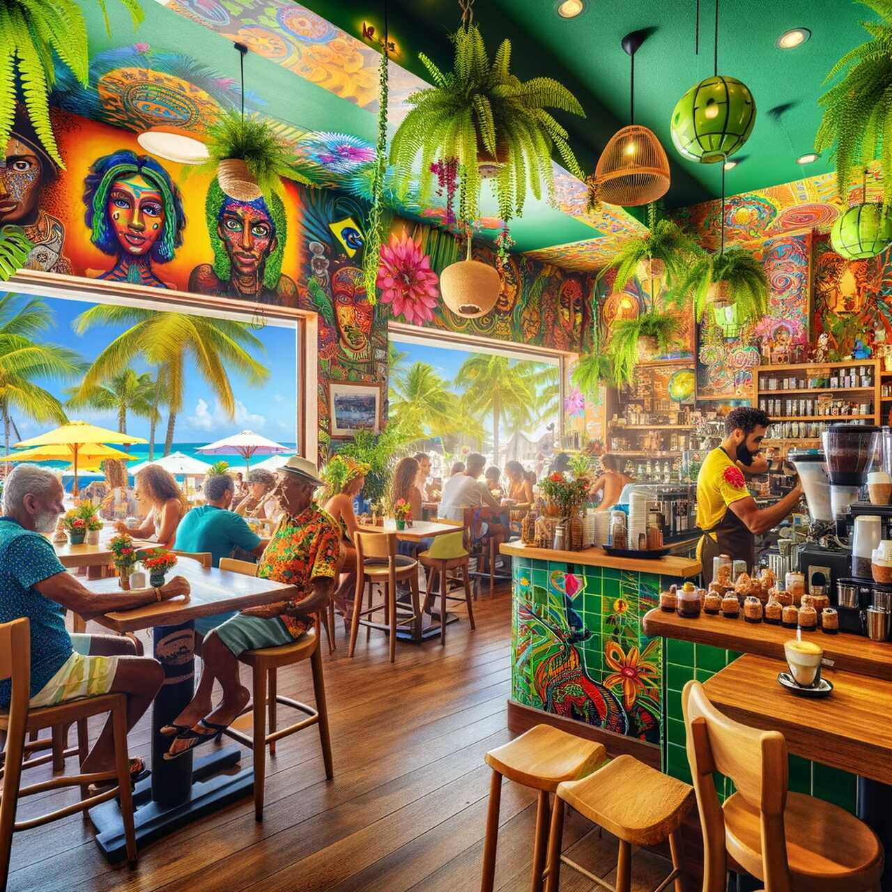
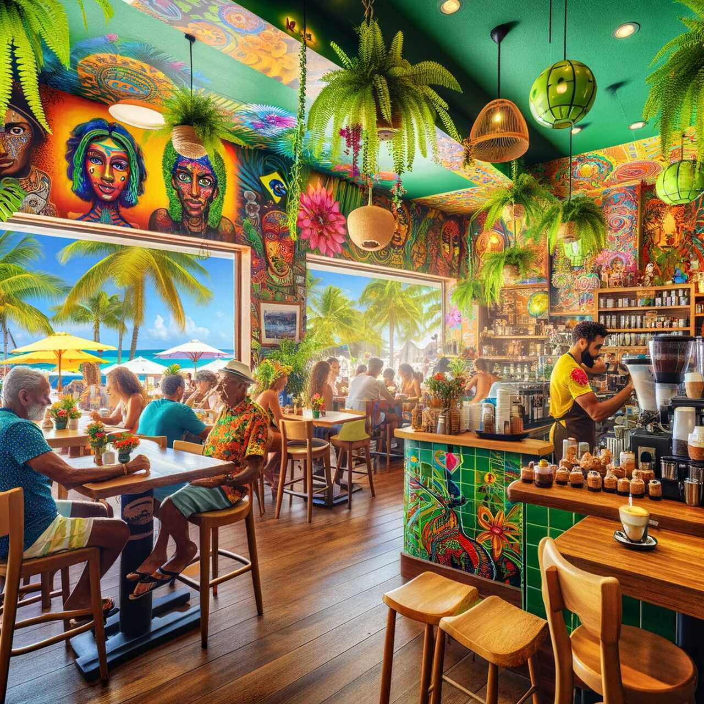

kss-style-gallery.css, line 18
3.1 #permalink GALLERY hero- sekcja główna strony z galerią
.hero-gallery: Element o klasie "hero-gallery" posiada tło w postaci obrazu "kociaKawiarnia.png" znajdującego się w katalogu "Media/Backgrounds". Obraz tła jest skalowany, aby wypełnić całą dostępną przestrzeń (background-size: cover) i wyśrodkowany (background-position: center). Tło jest także przypięte, aby pozostać nieruchome podczas przewijania strony (background-attachment: fixed). Element ten jest ustawiony jako relatywny, co pozwala na pozycjonowanie jego potomków. Kolor tekstu w sekcji jest ciemnoszary (#11161b), a wewnętrzny odstęp wynosi 100 pikseli na górze i na dole, a poziomo jest zerowy. Tekst jest wyśrodkowany.
.hero-gallery:before: Pseudo-element ":before" dla sekcji "hero-gallery" jest używany do dodania nakładki koloru na tło. Jest to blokowy element, który zajmuje całą przestrzeń swojego kontenera. Ma kolor tła #fef7e2 z przyciemnieniem 70% (opacity: 0.7) i jest ustawiony na warstwie z indeksem 1, aby znajdował się pod innymi elementami w sekcji.
**.hero-gallery > ***: Elementy potomne bezpośrednio umieszczone w sekcji "hero-gallery" mają ustawioną pozycję relatywną i są umieszczone na warstwie z indeksem 2, aby wyświetlać się nad nakładką koloru.
.hero-gallery h1: Nagłówek "h1" w sekcji "hero-gallery" ma rozmiar czcionki 48 pikseli i margines ustawiony na 0.
Galeria
Markup
<section id="hero" class="hero-gallery">
<h1>Galeria</h1>
</section>kss-style-gallery.css, line 24
3.2 #permalink GALLERY carusel- sekcja z karuzelą/slajderem
.last-photos-carousel, .carusel-label: Elementy o klasach "last-photos-carousel" i "carusel-label" mają wewnętrzny odstęp 2% od góry, 1% od prawej strony, 8% od dołu i 1% od lewej strony. Tło sekcji "last-photos-carousel" ma kolor #48534c, a sekcja "carusel-label" ma kolor tekstu #fef7e2 i jest wyśrodkowana. Dodatkowo, sekcja "carusel-label" ma dodatkowy odstęp na dole wynoszący 60 pikseli.
.carusel > input: Ukrywa elementy typu input wewnątrz sekcji "carusel".
.carusel-label: Dodatkowo ustawia margines na 0% oraz wysokość na 0 pikseli dla sekcji "carusel-label".
.carusel: Definiuje styl sekcji karuzeli, ustawiając maksymalną szerokość na 100%, wysokość na 500 pikseli (lub maksymalnie 100% widoku), marginesy na 20 pikseli od góry i od dołu, ukrywa przewijanie, uniemożliwia zaznaczanie tekstu i ustawia pozycję na relatywną.
.carusel__item: Stylizuje elementy karuzeli, ustawiając je na pozycji absolutnej, na pierwszym planie, ukrywa je, ustawiając szerokość i wysokość na 100%, tło jest wyśrodkowane i niepowtarzalne, przejścia są zdefiniowane dla lewego marginesu i transformacji, a także zapewnia płynne przejścia.
.carusel__arrow: Stylizuje strzałki karuzeli, ukrywa je, ustawia na pozycji absolutnej, wyśrodkowuje je względem pionu, zmniejsza nieco przezroczystość, ustawia kolor na biały, tło na szare i dodaje kursor w postaci wskaźnika. Dodatkowo, nadaje im rozmiar, grubość czcionki i wagę.
input:checked+div~div~div~div .carusel__item {background-image: none !important;}: Ukrywa obrazki karuzeli, które nie są aktualnie wyświetlane.
input:checked+div *, input:checked+div+input+div .carusel__item, input:checked+div+input+div+input+div * {display: block;}: Wyświetla obrazki karuzeli, które są aktualnie wybrane.
input:checked+div .carusel__item {left: -100%; transform: scale(0.4);}: Ukrywa obrazki, które są przed obecnie wybranym.
input:checked+div+input+div .carusel__item {left: 0; transform: scale(1);}: Wyświetla obecnie wybrany obrazek.
input:checked+div+input+div+input+div .carusel__item {left: 100%; transform: scale(0.4);}: Ukrywa obrazki, które są po obecnie wybranym.
input:checked+div .carusel__arrow {left: 0;}: Wyświetla lewą strzałkę karuzeli po wybraniu obrazka.
input:checked+div+input+div+input+div .carusel__arrow {right: 0;}: Wyświetla prawą strzałkę karuzeli po wybraniu obrazka.
input:checked+div .carusel__arrow:before {content: '❰';}: Wstawia lewą strzałkę jako zawartość przed lewą strzałką karuzeli.
input:checked+div+input+div+input+div .carusel__arrow:before{content: '❱';}: Wstawia prawą strzałkę jako zawartość przed prawą strzałką karuzeli.
Ostanie zdjęcia
Markup
<h2 class="carusel-label">Ostanie zdjęcia</h2>
<section class="last-photos-carousel">
<div class="carusel">
<input type="radio" id="car0" name="car" checked="checked"/>
<div></div>
<input type="radio" id="car1" name="car"/>
<div>
<label class="carusel__arrow" for="car0"></label>
<div class="carusel__item" style="background-image: url(Media/Gallery/UKBar.png)"></div>
</div>
<input type="radio" id="car2" name="car"/>
<div>
<label class="carusel__arrow" for="car1"></label>
<div class="carusel__item" style="background-image: url(Media/Gallery/USABar.png)"></div>
</div>
<input type="radio" id="car3" name="car"/>
<div>
<label class="carusel__arrow" for="car2"></label>
<div class="carusel__item" style="background-image: url(Media/Gallery/JapanBar.png)"></div>
</div>
<input type="radio" id="car4" name="car"/>
<div>
<label class="carusel__arrow" for="car3"></label>
<div class="carusel__item" style="background-image: url(Media/Gallery/IndieBar.png)"></div>
</div>
<input type="radio" id="car5" name="car"/>
<div>
<label class="carusel__arrow" for="car4"></label>
<div class="carusel__item" style="background-image: url(Media/Gallery/SPoleBar.png)"></div>
</div>
<input type="radio" id="car6" name="car"/>
<div>
<label class="carusel__arrow" for="car5"></label>
<div class="carusel__item" style="background-image: url(Media/Gallery/AfricaBar.png)"></div>
</div>
</div>
</section>kss-style-gallery.css, line 75
3.3 #permalink GALLERY collection- sekcja z albumem zdjęć
.collections: Element o klasie "collections" jest ustawiony jako kontener flexowy z kolumnową orientacją elementów. Elementy są wyśrodkowane wzdłuż osi głównej. Posiada wewnętrzny odstęp 4% od góry, 1% od prawej strony, 5% od dołu i 1% od lewej strony. Tło ma kolor #fef7e2.
.collections-header h2: Nagłówek "h2" w sekcji "collections" ma rozmiar czcionki 36 pikseli, jest wyśrodkowany i ma margines dolny 30%.
.images-wrapper: Kontener obrazków ma układ flexowy z zawijaniem elementów, przerwami między nimi o szerokości 30 pikseli i rozmieszczeniem przestrzeni między nimi wokół, a także maksymalną szerokość 1200 pikseli.
.images-wrapper-coll: Kontener obrazków w kolekcji ma perspektywę 1000 pikseli, jest ustawiony na relatywny i ma szerokość 300 pikseli i wysokość 200 pikseli, z marginesem 0 pikseli poziomo i 10 pikseli pionowo.
.images-wrapper-coll img: Obrazki w kontenerze kolekcji mają zdefiniowane przejścia dla transformacji i indeksu z-index, są ustawione na absolutnej pozycji, zajmują całą dostępną przestrzeń, są wyśrodkowane, nie są wyświetlane odwrócone (backface-visibility: hidden) i ich dopasowanie do kontenera jest ustawione na cover.
.images-wrapper-coll:hover img:nth-of-type(1): Po najechaniu na kontener kolekcji, pierwszy obrazek obraca się o 15 stopni, przesuwa się o 60 pikseli wzdłuż osi Z, o 15 pikseli w dół i o 10 pikseli w lewo. Jego indeks z-index jest ustawiony na 1.
.images-wrapper-coll:hover img:nth-of-type(2): Po najechaniu na kontener kolekcji, drugi obrazek obraca się o 15 stopni, przesuwa się o 120 pikseli wzdłuż osi Z i o 30 pikseli w dół. Jego indeks z-index jest ustawiony na 2.
.images-wrapper-coll:hover img:nth-of-type(3): Po najechaniu na kontener kolekcji, trzeci obrazek obraca się o 15 stopni, przesuwa się o 180 pikseli wzdłuż osi Z, o 45 pikseli w dół i o 10 pikseli w prawo. Jego indeks z-index jest ustawiony na 3.
Kolekcje


 



Markup
<section class="collections">
<div class="collections-header">
<h2>Kolekcje</h2>
</div>
<div class="images-wrapper">
<div class="images-wrapper-coll">
<img src="Media/Gallery/album1.1.png" alt="japonia 1">
<img src="Media/Gallery/album1.2.png" alt="japonia 2">
<img src="Media/Gallery/album1.3.png" alt="japonia 3">
</div>
<div class="images-wrapper-coll">
<img src="Media/Gallery/album2.1.png" alt="indie 1">
<img src="Media/Gallery/album2.2.png" alt="indie 2">
<img src="Media/Gallery/album2.3.png" alt="indie 3">
</div>
<div class="images-wrapper-coll">
<img src="Media/Gallery/album3.1.png" alt="brazylia 1">
<img src="Media/Gallery/album3.2.png" alt="brazylia 2">
<img src="Media/Gallery/album3.3.png" alt="brazylia 3">
</div>
<div class="images-wrapper-coll">
<img src="Media/Gallery/album4.1.png" alt="polska 1">
<img src="Media/Gallery/album4.2.png" alt="polska 2">
<img src="Media/Gallery/album4.3.png" alt="polska 3">
</div>
<div class="images-wrapper-coll">
<img src="Media/Gallery/album5.1.png" alt="rosja 1">
<img src="Media/Gallery/album5.2.png" alt="rosja 2">
<img src="Media/Gallery/album5.3.png" alt="rosja 3">
</div>
<div class="images-wrapper-coll">
<img src="Media/Gallery/album6.1.png" alt="włochy 1">
<img src="Media/Gallery/album6.2.png" alt="włochy 2">
<img src="Media/Gallery/album6.3.png" alt="włochy 3">
</div>
</div>
</section>kss-style-gallery.css, line 229
3.4 #permalink GALLERY about- sekcja "o mnie"
.about: Element o klasie "about" posiada tło o kolorze #11161b oraz biały kolor tekstu. Wewnętrzny odstęp wynosi 50 pikseli na górze i na dole, a 20 pikseli poziomo. Tekst jest wyśrodkowany.
.about h2: Nagłówek "h2" w sekcji "about" ma rozmiar czcionki 36 pikseli.
.about p: Akapity w sekcji "about" mają rozmiar czcionki 18 pikseli, odstęp międzywierszowy wynosi 1.6, a margines dolny wynosi 20 pikseli.
.about img: Obrazy w sekcji "about" mają maksymalną szerokość 20% szerokości kontenera, wysokość jest automatycznie dostosowana, a border-radius ustawiony na 50%, co nadaje im zaokrąglone krawędzie.
O mnie
Jestem pasjonatem kawy i dziennikarzem kulinarnym. Na tym blogu dzielę się moją wiedzą i doświadczeniem.

Markup
<section class="about">
<h2>O mnie</h2>
<p>Jestem pasjonatem kawy i dziennikarzem kulinarnym. Na tym blogu dzielę się moją wiedzą i doświadczeniem.</p>
<img src="Media/about-author.png" alt="Autor bloga">
</section>kss-style-gallery.css, line 349
3.5 #permalink GALLERY contact- sekcja kontaktowa
.contact: Element o klasie "contact" posiada tło o kolorze #f5f5f5. Wewnętrzny odstęp wynosi 50 pikseli na górze i na dole, a 20 pikseli poziomo. Tekst jest wyśrodkowany.
.contact h2: Nagłówek "h2" w sekcji "contact" ma rozmiar czcionki 36 pikseli i margines dolny 20 pikseli.
.contact form: Formularz w sekcji "contact" ma maksymalną szerokość 500 pikseli i jest wyśrodkowany.
.contact input, .contact textarea: Pola tekstowe i textarea w sekcji "contact" zajmują 100% szerokości, mają wewnętrzny odstęp 10 pikseli na wszystkich czterech krawędziach oraz są otoczone ramką o szerokości 1 piksela i kolorze #ddd.
.contact button: Przycisk w sekcji "contact" ma wewnętrzny odstęp 10 pikseli na górze i na dole oraz 20 pikseli poziomo, tło o kolorze #333, biały kolor tekstu, brak ramki, i kursor w postaci wskaźnika.
Kontakt
Markup
<section class="contact">
<h2>Kontakt</h2>
<form>
<input type="text" placeholder="Twoje imię">
<input type="email" placeholder="Twój email">
<textarea placeholder="Twoja wiadomość"></textarea>
<button type="submit">Wyślij</button>
</form>
</section>kss-style-gallery.css, line 389
3.6 #permalink GALLERY footer- sekcja kontaktowa
.footer-at-bottom: Element o klasie "footer-at-bottom" posiada tło o kolorze #fff5e6 oraz kolor tekstu #3c3c3b. Wewnętrzny odstęp wynosi 20 pikseli na wszystkich czterech krawędziach, a tekst jest wyśrodkowany. Jest umieszczony na dole strony.
.footer-at-bottom img: Obrazy w sekcji stopki mają szerokość 3em i margines z prawej strony wynoszący 20 pikseli.
Markup
<footer class="footer-at-bottom">
<a href=""><img src="Media/SocialMedia/instagram.png" alt="instagram"></a>
<a href=""><img src="Media/SocialMedia/facebook.png" alt="facebook"></a>
<a href=""><img src="Media/SocialMedia/tiktok.png" alt="tiktok"></a>
<a href=""><img src="Media/SocialMedia/twitter.png" alt="twitter"></a>
<p>© 2024 North Coffee. Wszelkie prawa zastrzeżone.</p>
</footer>kss-style-gallery.css, line 442